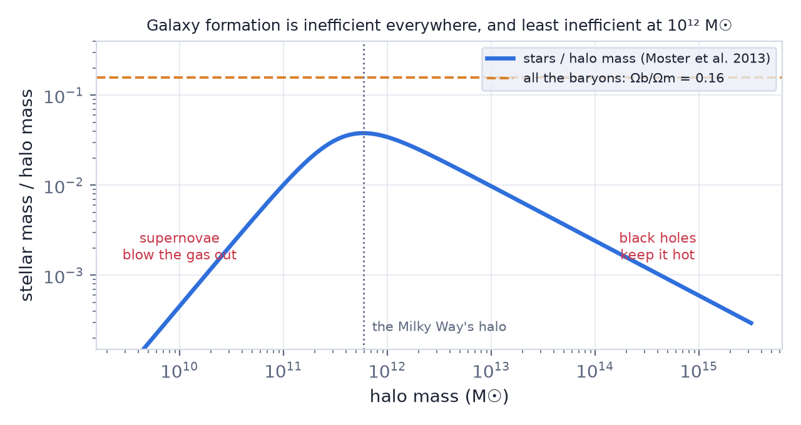

In this lesson you will learn
|
Two kinds of matter, two kinds of physics
Lesson L5.5 followed the dark matter: small haloes collapsing first and merging into larger ones, until a cosmic web of haloes fills the universe. That part is almost pure gravity, and simulations predict it to a few per cent.
But nobody has ever seen a halo. What we see are galaxies — stars and gas sitting at the bottom of the haloes — and turning gas into stars involves nearly all of physics: radiation, shocks, turbulence, magnetic fields, nuclear reactions and black holes. This is why galaxy formation is the least settled part of the cosmological story.
Step one: the gas has to cool
Gas falling into a halo is shock-heated to the virial temperature, about a million kelvin for a Milky Way–sized halo. Hot gas is held up by its pressure. To sink to the centre and form stars, it has to radiate that heat away — and it has to do so faster than the halo itself changes.
Cooling against falling Two times compete. The cooling time is the thermal energy over the rate at which it is radiated, , and it is short for dense gas. The free-fall time is how long the halo takes to collapse. Rees & Ostriker (1977) and Silk (1977) showed that only for haloes up to about M☉. Above that, the gas cools too slowly and stays as a hot atmosphere — which is exactly the mass scale above which there are no bigger galaxies, only groups and clusters of them. |
In small haloes the gas never even reaches the virial temperature: it flows in along filaments of the cosmic web in narrow, cold streams and feeds the galaxy directly. Only in massive haloes does a hot atmosphere form.
Step two: spin makes a disc
As a halo collapses, the tidal pull of its neighbours gives it a little rotation. The dimensionless spin is small, : haloes are held up by random motions, not by rotating. But the gas can radiate energy while keeping its angular momentum. As it cools and contracts, it spins faster, like a skater pulling in their arms, until rotation supports it — in a thin disc.
How big a disc? If the gas keeps its angular momentum, the disc's scale length comes out as (Mo, Mao & White 1998) For a halo of M☉ the virial radius is about 230 kpc, which gives a disc a few kiloparsecs across — the size of the Milky Way's. |
Mergers undo this. Two discs colliding scramble their orbits and leave a round, pressure-supported ellipsoid: an elliptical galaxy. The shapes of galaxies are a record of how quietly they grew.
Try it: Galaxy Rotation Curve Load a real galaxy and fit its rotation curve: the flat outer part is the halo, the rising inner part the disc that cooled into it. |
The stellar-to-halo mass relation
If every halo turned its share of baryons into stars — of its mass — galaxies would be far brighter than they are, and there would be far more small ones. Matching the numbers of galaxies of each stellar mass to the numbers of haloes of each mass (L5.5, and S27) shows how much of each halo really became stars.

The answer is: never much. The fraction peaks at a few per cent near M☉ — the Milky Way's halo — which means about a fifth of the available baryons. In dwarf galaxies and in clusters it is well below one per cent. Something stops star formation at both ends, and it is a different thing at each end.
Try it: Halo Mass Function Explorer Compare the number of haloes of 10¹⁰ and 10¹² M☉/h. There are far more small haloes than small galaxies: most of them must be nearly dark. |
Feedback: galaxies regulate themselves
In small galaxies, supernovae. A few million years after a burst of star formation, the most massive stars explode. In a small halo the escape speed is low, and the energy of the explosions can blow gas out altogether or keep it too turbulent to collapse. Star formation throttles itself. Dwarf galaxies are the most dark-matter dominated objects we know, and some of the smallest haloes may contain no stars at all.
In massive galaxies, black holes. Every large galaxy has a supermassive black hole (L6.9). When gas falls in, it shines as an active galactic nucleus and drives jets and winds that can outshine the whole galaxy's stars. In the hot atmospheres of massive haloes, radio jets inflate bubbles that keep reheating the gas — seen directly as cavities in the X-ray emission of clusters. That is why the most massive galaxies stopped forming stars billions of years ago.
Feedback is the missing ingredient Without feedback, simulations of galaxy formation make galaxies that are too massive, too compact and too numerous. With it — tuned to match the stellar mass function — large simulations such as EAGLE and IllustrisTNG reproduce the sizes, colours and shapes of galaxies remarkably well. The catch is that the tuning is done on the very quantities one would like to predict. |
Blue and red
Galaxies come in two families. Blue galaxies are discs still forming stars, with young, hot stars dominating their light. Red galaxies are mostly ellipticals whose star formation has stopped — been quenched — leaving old, cool stars. There are few in between, so the transition must be fast. Quenching happens to massive galaxies (black-hole feedback) and to small galaxies that fall into clusters, where their gas is stripped away.
Small-scale puzzles ΛCDM predicted more satellites around the Milky Way than were known, and denser centres in dwarf galaxies than observed ("missing satellites", "cusp–core", "too big to fail"). Much of the tension has eased: deep surveys have found dozens of faint satellites, and supernova-driven gas flows can flatten the central dark matter. Whether the rest points to new physics in the dark sector is still debated (L6.7). |
Remember this
|